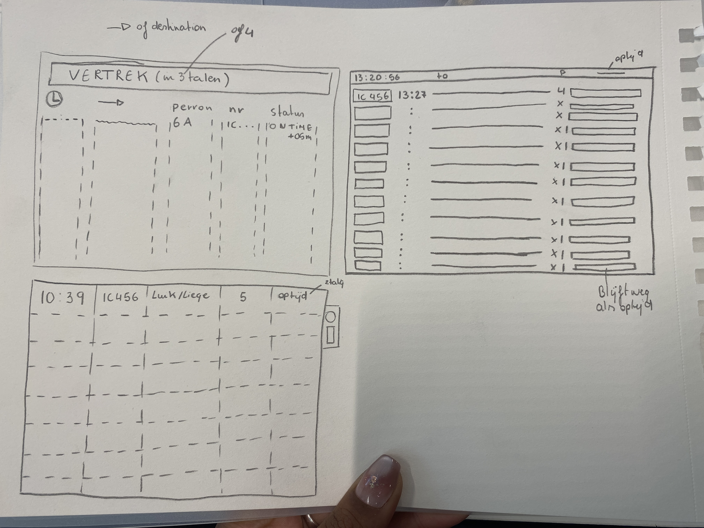
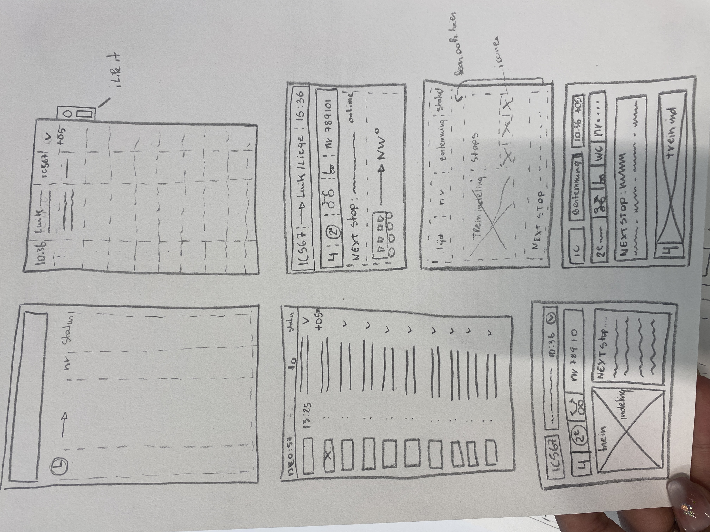

Lost in Tra(i)nslation
Week 1 Proces
Tijdens de eerste week lag de focus op onderzoek en de eerste visualisaties. Om een sterke basis te leggen voor mijn ontwerpen, heb ik eerst gekeken naar internationale voorbeelden van digitale schermen. Ook in het dagelijks leven, bijvoorbeeld in het openbaar vervoer, ben ik bewuster gaan letten op lay-out en informatievoorziening. Door feedback te vragen aan mijn omgeving over de duidelijkheid van bestaande borden, kreeg ik waardevolle inzichten in wat wel en niet werkt. Deze bevindingen heb ik vervolgens vertaald naar de eerste Lo-Fi schetsen

